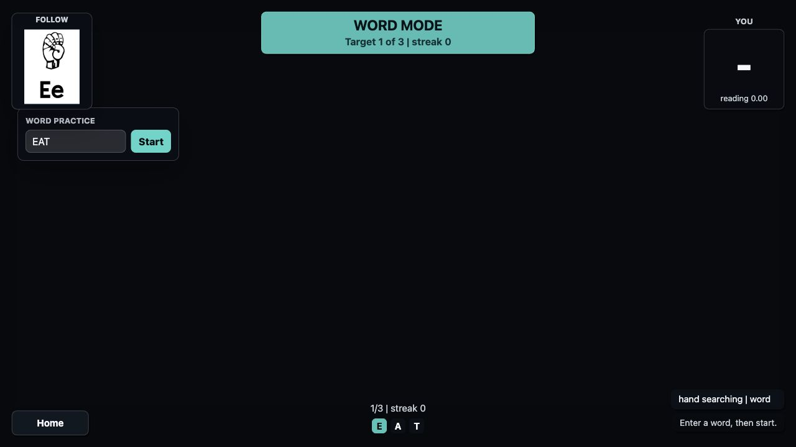
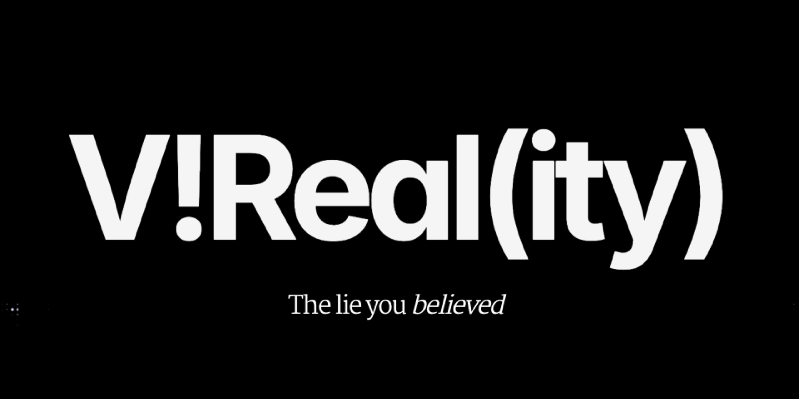
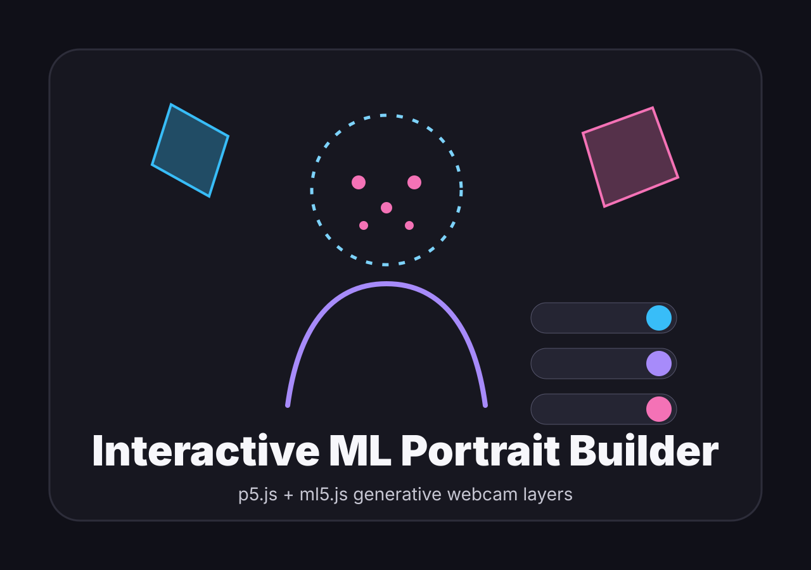
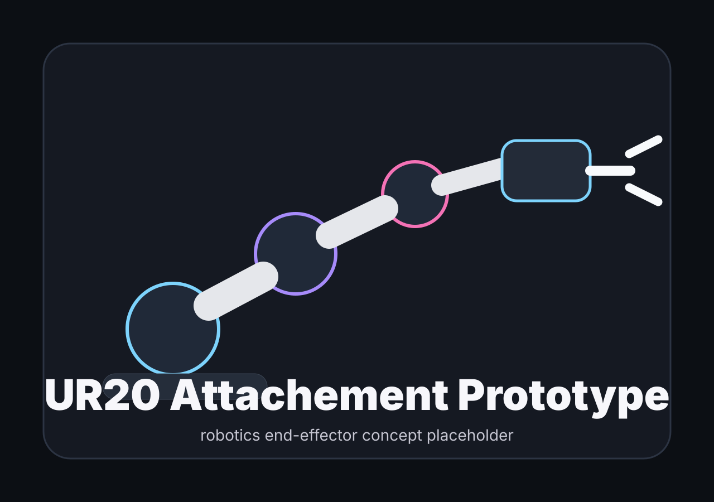

2026
NYUAD Interactive Media
B.A. in Interactive Media with minors in Computer Science and Film & New Media.
Open CV
I'm a Creative Technologist, Researcher, and Artist combining expertise in Computer Science, Film, and Interactive Media to create innovative and immersive systems at the forefront of emerging technology.
B.A. in Interactive Media with minors in Computer Science and Film & New Media.
Open CVPresented vER research on virtual companions for preoperative care at IMX ACM 2025 and EMRN Barcelona 2025.
View researchCreated Mondrian's Mirage, a VR installation exploring abstraction and embodied perception in museum space.
See projectsRecognized globally for a sustainability diplomacy concept exploring Rights of Nature and ecological governance.
View recognitionI build emotionally resonant systems that translate scientific, environmental, and human complexity into embodied public encounters.

Developed through my ML research assistantship with Prof. Jack B. Du and Daniel Shiffman, ASL Trainer is an accessibility-focused p5.js and ml5.js prototype for practicing American Sign Language fingerspelling with real-time gesture recognition. I shaped the project direction, trained and tested the recognition dataset, refined model behavior, and designed the A-Z and Word mode UI/UX with reference visuals, progress feedback, and deployment-ready polish.

As a Research Assistant at Aim Lab NYUAD, I contributed to a modular VR toolbox for systematically inducing and studying the six universal emotions and stress. I spearheaded the design of the "Anger" module, engineering interactive scenarios using social unfairness and time pressure to trigger a targeted response. My role also involved implementing biometric and behavioral data analysis protocols to empirically validate the emotional states elicited by the VR toolkit.

As a Co-Author, I designed virtual agents that leverage social presence to mitigate patient anxiety in simulated pre-operative hospital settings. I validated the agents' efficacy by conducting a pilot study that integrated biometric tracking with qualitative post-study surveys. The findings have been presented at prestigious international venues including IMX ACM Conference 2025 and EMRN Barcelona 2025.
Start from a perceptual, emotional, or social tension worth making tangible.
Use VR, ML, sensors, light, sound, and performance to test how the system feels in motion.
Combine user feedback, biometric signals, and observation to tune clarity, pacing, and interaction.
Shape the final work for an audience, venue, or learning context without losing the core idea.





I executed comprehensive QA testing on interactive food safety training modules, identifying critical UX flaws to enhance usability. Utilizing Cinemachine within Unity 3D, I utilized dynamic camera systems that significantly increased user engagement and collaborated with a cross-functional team to ensure all project milestones were met.